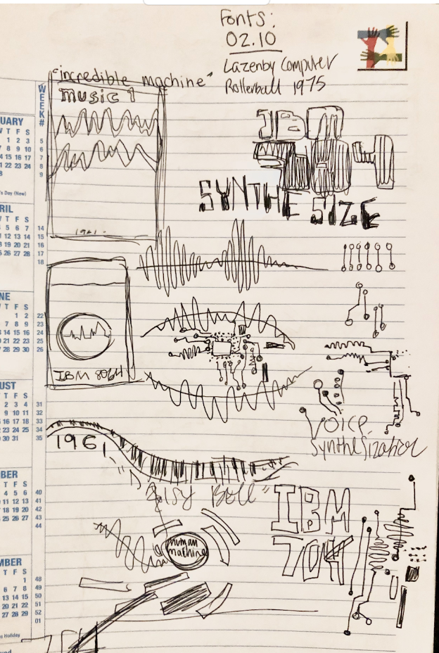
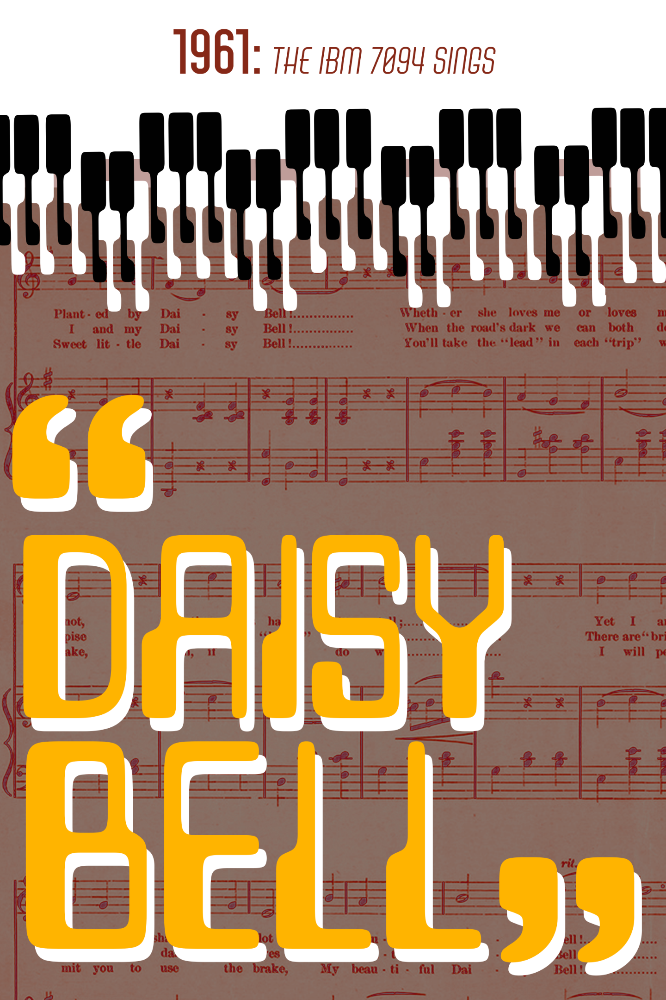

Daisy Bell Poster
Spring 2023 - Digital Survey II
Class voted best typography!
For this project we created a poster based on a historical event. In 1961, an IBM 704 sang the song “Daisy Bell”. It was the first time a computer was programmed to sing and paved the way for synthesized voices and instruments. Today, the most common comparison is Vocaloid, a software containing virtual singers like Hatsune Miku.
I think this is one of my strongest pieces because I limited myself to only using typographical elements. My first iterations were really rough and I didn’t have a clear vision. I went back and looked into a style that I wanted to draw inspiration from, and that’s when it came together. I took from 50s and 60s horror movie posters, Piet Zwart, and Russian Constructivism.


